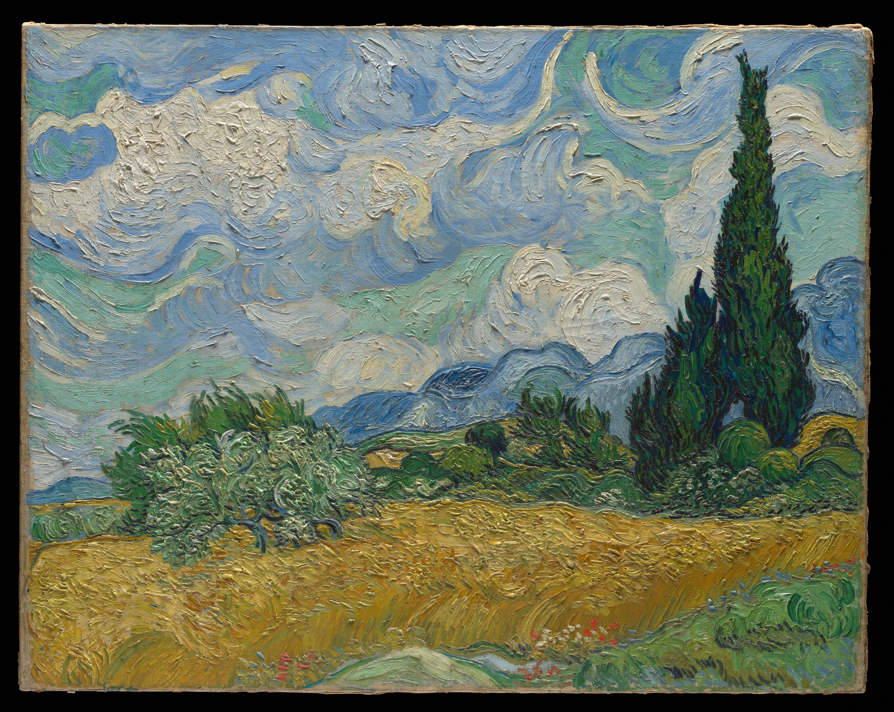
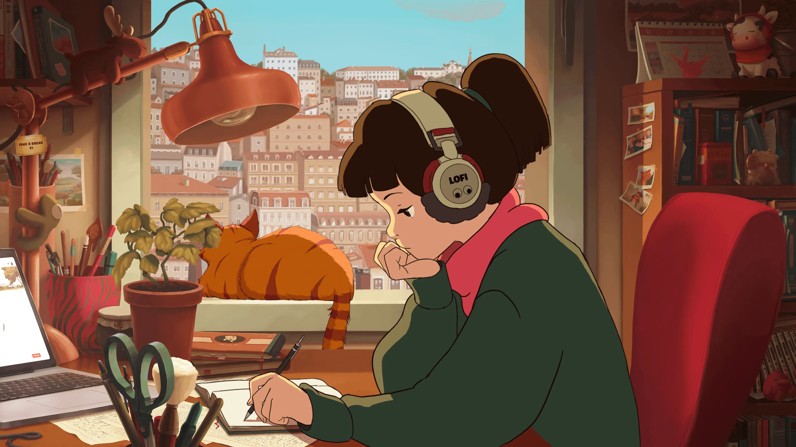
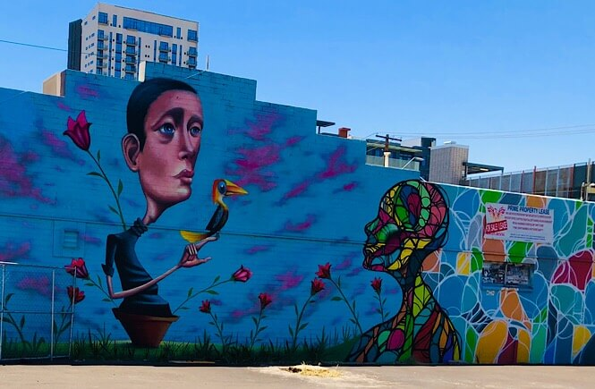

Welcome
Welcome to the Creative Coders Art Resources website. Explore resources and discover art and culture from different places
Explore Art
The Met Collection
Explore artwork from different cultures and time periods through the
Metropolitan Museum of Art's online collection. Search for artists,
paintings, sculptures, and more.

Explore Music
Lofi Girl
Explore calming music created by a plethora of talented people
with a wide range of themes and instraments like jazz, synthwave,
classical, halloween, summer, bosa, ambient, and more!

Learn to Draw
Drawabox
Practice drawing fundamentals with free, step-by-step lessons. Exercises focus on building confident lines, understanding perspective, and constructing three-dimensional forms.
Explore Downtown Phoenix Art & Culture
Phoenix, Arizona, is home to a vibrant artisitc community. From colorful street murals to local music and cultural events, downtown Phoenix offers creative experiences for residents and visitors.
Roosevelt Row Arts District
Roosevelt Row is a creative arts district located in Phoenix. It is known for colorful street murals, art galleries, local artists, and community events.
First Fridays Art Walk
First Fridays is a popular art event in downtown Phoenix. Visitors can explore artwork, enjoy music, and support local artists and businesses.

Phoenix Music & Entertainment
Downtown Phoenix has a lively music scene with concerts, local performers, and entertainment. Music is an important part of the city's creative culture.